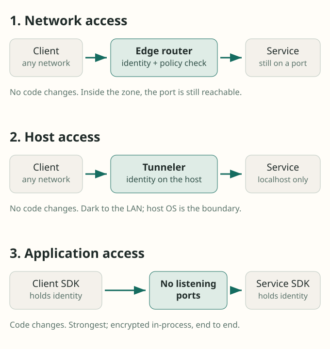

import zerotrust: an IDSW talk, checked
Talk reading, 21 Nov 2026. Session: import zerotrust: Network Security as a Dependency, Not a Ticket, IDSW 2026, 14:20-14:50 on 21 Nov, listed speaker Affan Basalamah (CTO at Salamah Systems) on the official agenda. This note is based on seven photographed slides shared with us. The photos are not reproduced here. Every factual claim was checked on 21 Nov 2026 against the primary advisory, CVE record or project documentation, and the claim-check table says plainly where the slide and the sources disagree.
The talk's arc: fresh critical CVEs keep arriving faster than tired humans can patch them; an autonomous AI attack framework (ARTEX) does not get tired, and an FBI FLASH about it recommends moving applications behind zero-trust access; a conventional perimeter has many breakable layers, so put the identity check at the network edge, on the host, or inside the application itself, using OpenZiti as the example. The structure is sound and the FBI document is real. Some slide details need correction.

Original explanatory diagram based on OpenZiti's documented deployment models, not a slide reproduction or a measured deployment.
The claim check
| Slide claim | What the sources say | Reading |
|---|
| php2shell, CVE-2026-109618, severity 9.2 | Confirmed. The PHP Group CNA scores it CVSS 4.0 9.2 Critical: unauthenticated remote code execution affecting all PHP installations serving web requests, with mod_php at highest risk. CISA added it to the Known Exploited Vulnerabilities catalog on 26 Oct after reports of active exploitation. Fixed in 8.2.35, 8.3.36, 8.4.27 and 8.5.12. | Confirmed. |
| Node2Shell, CVE-2026-111947, severity 9.2 | The identifier does not match the name. CVE-2026-111947 is a WordPress Pricing Table plugin authorization bypass (contributor role can clone and publish any post), scored CVSS 3.1 5.5 Moderate by its CNA, WPScan. No Node.js remote-code-execution issue under this identifier was found on 21 Nov 2026. | Identifier mismatch. Treat the pairing as unresolved until the speaker's source is known; it is not evidence of a critical Node.js RCE. |
| Java4Shell, CVE-2026-114938, severity 9.2 | Real and urgent. CISA's 17 Nov alert names Java4Shell, a memory-corruption flaw in the x86-64 HotSpot JVM Base64 decoder, with unauthenticated remote code execution potential and immediate patching urged. NVD currently lists Oracle's own CVSS 3.1 score as 8.1 High, not 9.2. | Real vulnerability; the slide's score does not match the NVD record at check time. |
| NGINX regex flaw, CVE-2026-42533, severity 9.2 | Confirmed with a version label. Ubuntu's record shows CVSS 4.0 9.2 Critical and CVSS 3.1 8.1 High for the same flaw: a heap buffer overflow when a map directive's regex capture variables are referenced before the map output variable. Code execution additionally needs ASLR disabled or bypassed; otherwise the outcome is denial of service. Data plane only, no control-plane exposure. | Confirmed; the score depends on which CVSS version you quote. |
| OpenSSL, CVE-2026-121481, severity 9.8 | The headline and the primary analysis disagree. An Ireland NCSC advisory (20 Nov) prints 9.8, but its own body states no attacker-triggerable path has been identified: reaching the overflow requires the calling application itself to pass an input length near INT_MAX, close to 2 GB, to EVP_EncodeBlock(). NVD is awaiting enrichment with the same caveat, and OpenSSL's fix pull request is labeled severity important, with project discussion calling it Low because no attacker-controlled path is known. | A 9.8 label exists in one advisory; the underlying analysis describes a much narrower defect. Read past the number. |
Score literacy is the quiet lesson. The same CVE can carry different numbers depending on the CVSS version (3.1 versus 4.0) and on who scored it: the vendor CNA, NVD, or a national CERT. A slide that shows one number without its version and scorer is showing a summary, not the finding. For action, the version lists and exploit status matter more than the digit.
The FBI warning is real, and it does recommend zero trust
The slide's reference resolves. IC3 published FLASH-20261113-001 on 13 Nov 2026 (TLP:CLEAR), covering ARTEX, an open-source LLM-driven agentic penetration-testing framework that the FBI says malicious actors have used since at least August 2026. The advisory reports intrusions progressing from initial targeting to privileged access in under three hours, theft of personal information of about 67,000 people in campaigns against South Korean financial institutions, and a ConnectWise Cloud Backup supply-chain compromise with attempted sign-ins to more than 2,250 downstream tenants. Among its immediate actions, the advisory tells organizations to inventory internet-facing applications, restrict sensitive services to trusted networks or dedicated administrative paths, and, where feasible, move enterprise applications behind Zero Trust access solutions to eliminate external exposure.
Two honest caveats. First, the advisory pairs zero trust with patching, least privilege and monitoring; it does not present zero trust as a substitute for fixing the CVEs above. Second, the FBI cautions that its published indicators are point-in-time and should be vetted against current telemetry before blocking, since cloud IP addresses get reassigned.
Three places to put the trust check
OpenZiti's own documentation describes three deployment models, which can be mixed in one network. The difference is where the identity check sits, and therefore how much of the old attack surface remains reachable.
| Model | Where the check sits | Code changes | What stays exposed |
|---|
| Network access | An OpenZiti edge router fronts a trusted network zone; identity and policy are verified before traffic enters the overlay. | None. | The service still listens on a port inside the zone, so anything already inside can still reach it. Suited to legacy and IoT/OT equipment that cannot run agents. |
| Host access | A tunneler runs on the same host as the service and holds the identity. | None; install and enroll the tunneler. | The service listens on localhost only, so it is dark to the LAN; the host operating system is the trust boundary. |
| Application access | An OpenZiti SDK inside the application itself (and the client) holds the cryptographic identity and encrypts in-process. | Yes; embed the SDK. | No listening ports anywhere, not even localhost. The strongest posture; the identity lives at the application layer. |
The official quickstart suggests most teams begin with host access, since it deploys in minutes with no code changes, and reserve SDK embedding for new development or high-security workloads. Every participant carries an x509-backed identity; connections are authorized per service, so reaching one service grants nothing about any other. Services register through outbound connections only, which is why the talk's outgoing-only firewall diagram works: there is no inbound path to scan.
What zero trust does not fix
- It does not patch software. php2shell, Java4Shell and the NGINX flaw are fixed by updating PHP, the JDK and NGINX. Zero trust changes who can attempt a connection; it does not change what a vulnerable service does once a request arrives. The FBI advisory lists exposure reduction and patching side by side, and both rows of the claim table still demand updates.
- It does not help when the caller is the problem. The OpenSSL defect needs the calling application to hand the library a near-2 GB length. That is an API-usage defect inside trusted code, and an identity check on the network cannot see it.
- It moves trust rather than deleting it. The controller, enrollment process and policy definitions now decide who gets in. They become high-value systems that need the same care as any identity infrastructure. NIST SP 800-207's framing applies: no implicit trust from network location, per-session authorization, and continual re-evaluation, not a one-time setup.
The speaker's takeaway
The closing slide revises the opening cat meme. Rather than treating every new CVE as a drop-everything emergency, the speaker's position is:
- Prioritize urgent patches. Patch what is actively exploited or directly exposed first, and let the rest follow an orderly, scheduled backend cycle instead of panic.
- Mitigate actively. When a patch cannot land immediately, reduce what an attacker can reach in the meantime rather than doing nothing.
- Trust machine and device identity, not IP addresses. A network location says nothing about who is calling.
- Hide and restrict exposure through zero trust. Make as much of the system and application surface unreachable as possible.
Risk-based patch prioritization is standard practice, and this page's sources support the ordering: CISA's Known Exploited Vulnerabilities catalog exists precisely to tell operators which issues cannot wait, while vendor advisories and distribution trackers carry the scheduled remainder. The claim table above shows what that split looks like for these five CVEs. Two cautions stay attached. Exploited and internet-facing defects, php2shell and Java4Shell here, remain patch-now items under any prioritization scheme. And zero trust is the mitigation layer, not the fix: it shrinks what is reachable and how far a compromise spreads, but the defects themselves close only when the software is updated.
Sources checked 21 Nov 2026